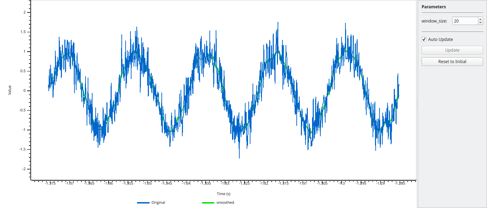
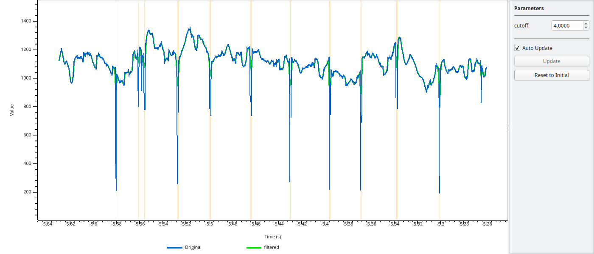
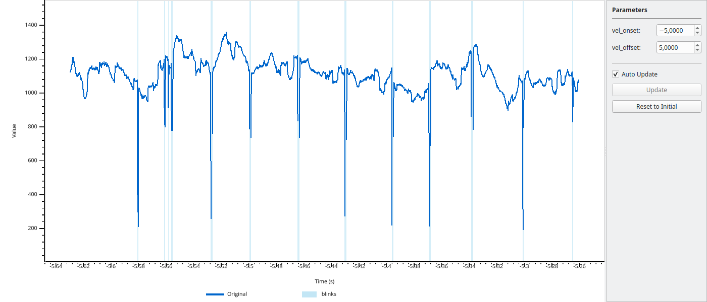

Interactive Parameter Tweaking (pp.tweak)¶
The tweak() function provides an interactive way to tune function parameters while seeing the result in real-time. The original data is displayed with the function result overlaid, and a parameter panel allows you to adjust values and immediately see the effect.
Keyboard shortcuts: Press H or ? in the viewer to see all available keyboard shortcuts for navigation and toggling display options.
Basic Usage with Arrays¶
The simplest use case is tweaking a function applied to numpy arrays:
import numpy as np
import pypillometry as pp
# Create noisy signal
t = np.linspace(0, 10, 1000)
signal = np.sin(2 * np.pi * 0.5 * t) + np.random.randn(1000) * 0.3
# Define a smoothing function
def smooth(data, window_size=20):
kernel = np.ones(int(window_size)) / int(window_size)
return np.convolve(data, kernel, mode='same')
# Tweak the window_size parameter interactively
final_params = pp.tweak(signal, smooth, {'window_size': 20}, time=t)
print(f"Final window_size: {final_params['window_size']}")
{kind=link}

The white line shows the original data, and the green line shows the result of the function with the current parameters. Adjust parameters in the panel on the right.
Tweaking EyeData Processing¶
For pupillometry analysis, you often need to tune filter parameters. The tweak() function works with EyeData objects - the function receives the full EyeData and should return an EyeData:
import pypillometry as pp
eyedata = pp.get_example_data("rlmw_002_short")
# Define a function that applies lowpass filtering
def lowpass(data, cutoff=4.0):
return data.pupil_lowpass_filter(cutoff=cutoff, inplace=False)
# Tweak the cutoff frequency
final_params = pp.tweak(
eyedata,
lowpass,
{'cutoff': 4.0},
variable='left_pupil'
)
print(f"Final cutoff: {final_params['cutoff']} Hz")
{kind=link}

The variable parameter specifies which channel to display (e.g., 'left_pupil', 'right_pupil').
Tweaking Blink Detection¶
Another common use case is tuning blink detection parameters. Functions can return Intervals objects, which are displayed as highlighted regions:
import pypillometry as pp
eyedata = pp.get_example_data("rlmw_002_short")
# Define a function that detects blinks and returns intervals
def detect_blinks(data, vel_onset=-5.0, vel_offset=5.0):
blinks = data.pupil_blinks_detect(
apply_mask=False,
vel_onset=vel_onset,
vel_offset=vel_offset
)
return blinks.get('left_pupil') # Returns Intervals
# Tweak the velocity thresholds
final_params = pp.tweak(
eyedata,
detect_blinks,
{'vel_onset': -5.0, 'vel_offset': 5.0},
variable='left_pupil'
)
{kind=link}

Detected intervals are shown as highlighted regions. Press I to toggle interval visibility.
GUI Controls¶
The parameter panel on the right side of the window provides:
Spinboxes for each parameter - adjust values by typing or using the arrows
Auto Update checkbox - when enabled, the plot updates immediately when you change a parameter
Update button - when auto-update is disabled, click to apply changes
Reset button - restore all parameters to their initial values
For computationally expensive functions, disable auto-update and use the Update button to avoid lag.
Return Values¶
Functions passed to tweak() can return different types:
numpy array: Displayed as an overlay line
dict of arrays: Multiple overlay lines with different colors
Intervals object: Displayed as highlighted regions
dict with arrays and Intervals: Both overlay lines and highlighted regions
Example returning multiple outputs:
import numpy as np
import pypillometry as pp
eyedata = pp.get_example_data("rlmw_002_short")
def process(data, cutoff=4.0, vel_onset=-5.0):
# Apply filter
filtered = data.pupil_lowpass_filter(cutoff=cutoff, inplace=False)
filtered_signal = np.array(filtered['left_pupil'])
# Detect blinks
blinks = data.pupil_blinks_detect(apply_mask=False, vel_onset=vel_onset)
# Return both
return {
'filtered': filtered_signal,
'blinks': blinks.get('left_pupil')
}
final_params = pp.tweak(
eyedata,
process,
{'cutoff': 4.0, 'vel_onset': -5.0},
variable='left_pupil'
)
API Reference¶
- pypillometry.tweak(data, func, params, variable=None, time=None)[source]¶
Interactively tweak function parameters while viewing the result.
Opens a viewer showing the original data with the function result overlaid. A separate parameter window allows adjusting numeric parameters in real-time, with the overlay updating to reflect the changes.
- Parameters:
data (EyeData, ndarray, or list of ndarrays) – Original data to display and pass to the function.
func (callable) – Function that takes (data, **params) and returns transformed data of the same type. For EyeData input, function receives the full EyeData object and should return an EyeData object. For arrays, receives and returns arrays.
params (dict) – Initial parameter values. Only numeric types (int, float) are supported. These become the adjustable parameters in the GUI.
variable (str, optional) – For EyeData objects, specifies which variable to display (e.g., ‘left_pupil’, ‘right_pupil’, ‘left_x’, ‘right_y’). If not provided, uses the first available pupil channel.
time (ndarray, optional) – Time vector for array data. If not provided, uses sample indices. For EyeData, the time vector is taken from the object.
- Returns:
Final parameter values after user adjustments. Returns the parameter dict as it was when the viewer was closed.
- Return type:
dict
Examples
With EyeData - function receives full EyeData object:
>>> import pypillometry as pp >>> >>> eyedata = pp.get_example_data("rlmw_002_short") >>> >>> def smooth(d, lp=5): ... return d.pupil_lowpass_filter(cutoff=lp, inplace=False) >>> >>> # Tweak lowpass filter cutoff, display left_pupil >>> params = pp.tweak(eyedata, smooth, {'lp': 5}, variable='left_pupil')
Basic usage with numpy arrays:
>>> import numpy as np >>> >>> # Create sample data >>> data = np.sin(np.linspace(0, 10, 1000)) + np.random.randn(1000) * 0.1 >>> >>> # Define a smoothing function >>> def smooth(x, window_size=10): ... kernel = np.ones(window_size) / window_size ... return np.convolve(x, kernel, mode='same') >>> >>> # Tweak the window_size parameter >>> final_params = pp.tweak(data, smooth, {'window_size': 10})
Notes
Keyboard controls in the viewer:
Left/Right arrows: Pan view
Up/Down arrows: Zoom in/out
Space: Reset to full view
Q/Esc: Close viewer
The parameter window stays on top and can be repositioned. Changes to parameters are applied immediately and the overlay updates in real-time.